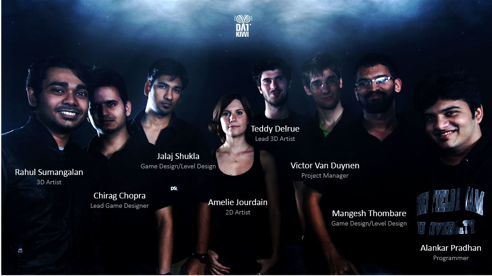

No Light:
Game: No Light
Genre: Stealth
Platform: Windows PC
Target Audience: Stealth game enthusiasts
View: Top down
This is my final year project. We are to make a prototype of a game in 8-9 months. This project will be completed by the end of May’14.
This is a team project.
In No Light, you play as Lumo, a young lumino fish in search of his family and the mystery behind the Power Cut Tragedy.
He has to survive using his ability to control the light, the special abilities of EchoEggs and smaller fishes to attack or lure the predators. Light allows Lumo to have some visibility on the background but attracts other fishes. According to the complexity of the behaviors his predators will adopt, Lumo will have to switch to more or less complex strategies using his environment and his powers.
By consuming different types of seaweeds, Lumo creates different EchoEggs. EchoEggs can stun, lure or immobilize the enemies according to their types.
Lumo uses smaller fishes as bait to attract enemy fishes to get time to escape.
The following video shows an alpha build of the game with all core mechanics working.
My role in the project is Game Designer and Level Designer.
As a Game Designer I have worked on various documents needed for the pre-production game such as Game Design Document, High Concept document, Competitor Analysis document, character sheets etc. I have also helped in concept mapping and designing various game systems and flow charts for the game. The Designer team is also making questionnaire for Testers.
As a level designer my main job is to make Levels for the game. Earlier our focus was on exploration and we wanted players to roam and explore the game but we changed it to a more modular and linear level design based on the feedbacks we received. I have worked on Level design document of this project. I have been also working with the other 2 game designers on level pacing and difficulty management for each level. Following are the some of the Level layouts I made for the game.
You can check updates of our project on Tumblr or our Facebook page.